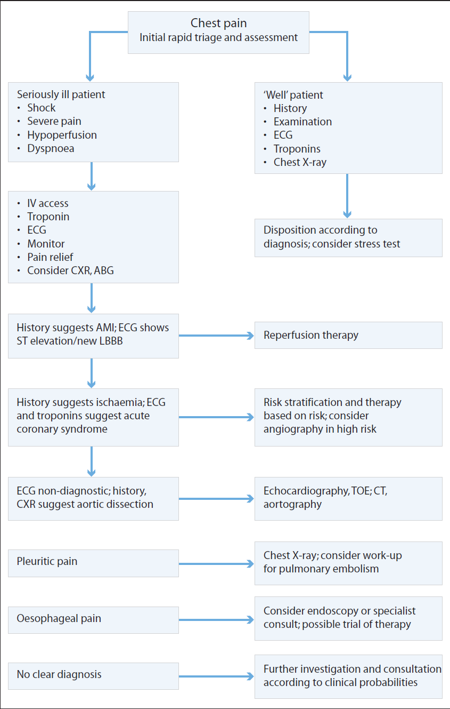

ED survival kit
Table of Contents
- 1. General routines
- 2. Common complaints
- 2.1. Chest pain, dyspnoea and haemoptysis
- 2.2. Abdominal pain and GI emergencies
- 2.3. Back pain
- 2.4. Fractures and bones
- 2.4.1. General principles
- 2.4.1.1. Resus and detection of other injuries
- 2.4.1.2. Analgesia
- 2.4.1.3. Detection of associated injuries
- 2.4.1.4. Early fracture reduction
- 2.4.1.5. Early dislocation reduction
- 2.4.1.6. Procedural sedation for reduction of fractures and dislocations in the ED
- 2.4.1.7. Appropriate consultation and referral
- 2.4.1.8. Hand and wrist injuries
- 2.4.2. UL
- 2.4.2.1. Clavicle
- 2.4.2.2. AC subluxation/dislocation
- 2.4.2.3. Sternoclavicular subluxation/dislocation
- 2.4.2.4. Glenohumeral dislocation, anterior
- 2.4.2.5. Glenohumeral dislocation, posterior
- 2.4.2.6. Humeral head and neck fractures
- 2.4.2.7. Humeral shaft fractures
- 2.4.2.8. Supracondylar humeral fractures
- 2.4.2.9. Elbow dislocation
- 2.4.2.10. Olecranon fractures
- 2.4.2.11. Pulled elbow
- 2.4.2.12. Radial head and neck fractures
- 2.4.2.13. Radius and ulna shaft fracture
- 2.4.2.14. Distal radius and ulna fractures
- 2.4.2.15. MC and P fractures
- 2.4.2.16. IP and MCP dislocations
- 2.4.2.17. Mallet finger
- 2.4.2.18. Butonniere deformity
- 2.4.2.19. Digital nerve injury
- 2.4.2.20. Tendon injuries
- 2.4.3. Pelvis
- 2.4.4. LL
- 2.4.4.1. Femoral neck
- 2.4.4.2. Hip joint dislocation
- 2.4.4.3. Femoral shaft fractures
- 2.4.4.4. Distal femoral fractures
- 2.4.4.5. Rupture of quadriceps tendon
- 2.4.4.6. Patellar fractures
- 2.4.4.7. Patellar dislocation
- 2.4.4.8. True knee dislocation
- 2.4.4.9. Tibial plateau fracture
- 2.4.4.10. Acute knee pain
- 2.4.4.11. Traumatic knee pain
- 2.4.4.12. Non-traumatic knee pain
- 2.4.4.13. Tibial and fibular shaft fractures
- 2.4.4.14. Isolated fibular fractures
- 2.4.4.15. Ankle ligament injuries
- 2.4.4.16. Ankle dislocation
- 2.4.4.17. Ankle fractures
- 2.4.4.18. Achilles tendon rupture
- 2.4.4.19. Talus fracture
- 2.4.4.20. Calcaneus fracture
- 2.4.4.21. Major fractures/dislocations of the foot
- 2.4.4.22. Misc MT injuries
- 2.4.4.23. Phalangeal fractures
- 2.4.4.24. IP and MTP dislocations
- 2.4.1. General principles
- 2.5. Pain management in the ED
- 2.6. Poisoning, overdoses, drugs and alcohol
- 2.7. Neurological emergencies
- 2.8. Shock
- 3. Reading list
This is going to be much longer and more complicated than my other “survival kit” pages because - god help me - there is a lot to learn.
Most of this comes from the Fulde book because that’s where our consultants have a book chapter. It’s not good as a source for general knowledge and isn’t really enough most of the time; for that I’d recommend the USMLE Step 2 resources like UWorld and AMBOSS, which my RemNote pages are based off. As far as “red flags” go, they’ll have you covered too but the hospital protocols and ACI website are more local so those should be your first port of call.
1. General routines
1.1. Being the ED intern
- Every doctor has their own opinion. As far as medical practice goes it’s just “do what the boss says”; the extent of this is worse than in e.g. IM, surg
- It’s “always on”; so no prolonged rest breaks, no hiding in the bathroom, no using idle time to study. Go and help someone else with their jobs or something
- You have no meaningful autonomy! Doing things “your own way” is a no go
- So much of medicine feels like “medical theatre” in the same sense that the TSA checks at the airport are “security theatre”. It’s to give the illusion of safety when in fact much of what we do is stupid or useless
- When I was in WWBH the COVID precaution measures were obviously useless; iso rooms next to non-iso rooms, no cordoned-off doffing areas, no negative pressure areas, etc.
- Just look up the LRs for the vast majority of clinical signs, most don’t even break a factor of 10. However, radical changes to practice would likely not be accepted by practitioners or patients so we’re kind of stuck with what we have for now (cf. “user acceptance testing”)
- Noting the above, good relationships are paramount. In order to secure this, at least do the following
- Introduce yourself to basically everyone you will need to work with on some level.
- I have cripplingly bad social anxiety which I need to take medication for and has caused me a lot of professional problems, so to make life easier for my fellow introverts, I’ve ranked these introductions in order of importance based on how often or likely it is you’ll need to talk to them
- Your attending/consultant
- Registrars
- Nurses
- Colleagues (i.e. other junior doctors)
- Ward clerk
- Allied health (i.e. PT, SW, pharmacist)
- Make sure you ask any staff you need to directly report to how they like to be worked with so you don’t step on any toes
- If they don’t elaborate try to ask them a closed question about stuff you feel unclear about. The worst possible scenario is that something you do wrong comes back to bite you later
- You should have had an orientation to the ED, especially if you haven’t worked there before
- Going somewhere?
- Tell your immediate superior
- If you can’t reach them tell the OPNUM
- Tell someone else if that doesn’t work. Think about who your immediate superior would ask
- At least at StV’s they’ll have a phone directory for you to get in touch with the staff. If not try to ask for contacts
- Help out your peers, they might help you back. We’re all a team here!
- If you’re in your last hour and don’t want to pick up another patient, then help out with odd jobs
- With regards to routine, consider the following issues
- Handover
- Day to evening - you’ll need to communicate why they’re here and what’s been done thus far
- Ideally try to prepare as much of it before you go so they don’t do it wrong (transmission loss is a real thing)
- Breaks and debriefing
- Because of the always-on nature of the ED it can be difficult to time your break. Try these times:
- When the new staff are coming in
- When waiting for results to return
- If you have a worrying patient, can you stay somewhere closer to the patient area?
- If you have challenging, emotional or confronting times, don’t be afraid to let your superior know and ask for a short break to compose yourself. Generally speaking they can be quite understanding.
- It’s also stressed that you should talk about it with someone, get it off your chest, find commonality in others’ experiences, etc.
- Because of the always-on nature of the ED it can be difficult to time your break. Try these times:
- Handover
- Getting pimped
- You may be asked random knowledge questions fairly often. Again, it’s okay to not know, but it’s best if you CAN answer
- One thing I’ve noticed a lot is that their idea of making it “not that easy” is to make the question extremely open-ended.
- A question I get a lot of that I hate is “what are the red flags for X?”. I shudder to think that anyone actually reasons using “listicles” like this instead of using logic i.e. thinking about “lethal endpoints” and reasoning “red flags” backwards from them, but unfortunately it seems a lot of people actually do learn without understanding in medicine simply because of how fast we are bombarded with content. So if you have cognitive differences like ADHD or autism (even if it’s relatively minor), or you just aren’t a “memorising lists” type of person, prepare to die!
- Get regular feedback from your superiors!
- How are you doing? Is there anything you can do differently?
1.2. Picking up patients
- As an intern (or even a resident) you’ll generally pick up and see category 3-5 patients. Anything higher warrants discussion with the reg or consultant you’re working with
- If you’re unsure you should ask your superior who they’d like you to pick up; otherwise, just pick whoever’s next up
- Start by doing the initial workup then reporting back to your superior
- Aim to formulate DDx and potential management BEFORE you talk to them
- As you progress through you can initiate more ix/mx independently BUT ALWAYS RUN THE PATIENT BY YOUR SENIOR
- Talk earlier if you’re more unsure or if they’re sicker/deteriorating
- And in some special cases e.g. paeds
- Running through it
- Patient assessment
- Start by looking at the information on the triage sheet i.e. initial history, vitals
- Use this to brainstorm potential differentials, what further information you need to “sieve” the patient’s case into something more definitively manageable
- Consider potential issues with (can d/w triage nurse, NIC)
- Monitoring (cardiac, etc.)
- Violence/absconding (psychiatric and behavioural risk matrix)
- Mobility
- Ward admission/a hospital bed
- Invasive examinations or investigations (e.g. PR exam for PR bleeds)
- Special equipment e.g. slit lamp examination
- Note that assessment and management is often simultaneous so some initial stabilisation would perhaps precede the history
- Also be mindful of collateral sources. Get onto these early because the requests will take time to fulfil
- Old notes
- Notes from other hospitals
- Referral letters
- Next-of-kin (family and friends)
- If you’re ever worried, don’t hesitate to ask your superior, they expect you to know your limitations and to come to them for help
- Start by looking at the information on the triage sheet i.e. initial history, vitals
- Investigations
- Most people need bloods, and potentially IVs thereafter, so start with a 20g PIVC and draw bloods thence
- Get the full rainbow at the outset to save yourself from later headaches with the path lab
- Similarly, with imaging, try to order it all at the outset so they only need to get wheeled there once
- Any more extensive or potentially difficult investigation (i.e. not XRs, bloods, or simple bedside tests like ECG, spiro, urinalysis) should really be discussed with a senior
- Chase all your own results and discuss them with your senior
- Most people need bloods, and potentially IVs thereafter, so start with a 20g PIVC and draw bloods thence
- Discussion
- Once the history and exam are done, run over it with your senior (earlier if worried, even if incomplete)
- The aim here is to come to an agreed working diagnosis or problem list and management plan
- Communication tips
- Be succinct (elaborated on under Case presentations)
- Start with an executive summary of the case and your thoughts on disposition and management to help signpost (e.g. “I just saw a 49yo man w/ intermediate-risk chest pain who I think requires admission for stress testing and monitoring”)
- Make sure you know their vitals before starting and that you include what has already been done for the pt
- Try to finish your presentation with how you’d like to manage the situation. Ask if anything else needs to be done or if you’ve left anything out.
- If you’re really concerned, do not hesitate to ask for senior review
- Always remember, safety first!
- If the senior doctor asks you something you don’t know or forgot to ask, never pretend to know the answer or make something up
- They can usually tell
- This gives a false impression of the patient’s status and can change management
- It’s fine not to know things, after all, you’re an intern ffs
- Though it can look bad if you don’t know things that’d be expected of your level…
- This is hard because you’re going to get marked on this and some things you’re “expected” to know may not at first seem obvious. Doctors also tend to be highly opinionated people so it can feel very difficult to navigate.
- What I find helps in times like these is a Buddha-like mindset, or sati. In more common parlance, it’s basically saying “it is what it is” to yourself as a reassurance. Actively taking the time to practice vipassana helps greatly.
- If the senior doctor asks you something you don’t know or forgot to ask, never pretend to know the answer or make something up
- Once the history and exam are done, run over it with your senior (earlier if worried, even if incomplete)
- Further referral
- By now you should have a clear plan of action for the patient. Make sure you keep monitoring them and chasing any outstanding investigations
- Depending on their disposition
- Likely discharge
- start discharge planning
- Always requires clearance from a senior doctor!
- Includes things like AH involvement, letters, scripts, f/u’s, referrals
- Transport? How will they get back to their regular place of living?
- Home vs NH etc.
- Need for HITH
- Likely admission
- start referral to relevant team
- Try to ensure all the information they’ll need is on hand
- You may not need to wait for everything, but all the important stuff should be there
- Don’t be rattled if you are asked questions or met with skepticism
- This is quite common for inpatient teams when it comes to referrals from the ED. In hospitals, everyone is overworked and trying their best not to get too much caseload
- Recall ISBAR. Again, more info under Case presentations
- In some cases you might need to refer a patient upfront before any principal diagnosis is reached. Don’t be afraid to be upfront about this in your referral, as long as you can explain why you think their involvement is warranted now
- e.g. 30M pres w/ LLQ pain. ?cause, requiring ongoing morphine, concern re (potential dx), ?need for med/surg opinion -> ?admission for further ix/mx
- Always document any input from the referring team and arrange anything they request
- Now, if they are going to the ward
- Chart meds
- Any required substitutions? e.g. IV morphine can’t be given on the ward
- When are they next likely to be reviewed? Is everything they need set up for until then?
- e.g. PIVC for IV fluids
- Any necessary testing is arranged and time-critical stuff handed over to the ward resident e.g. serial troponins
- If the registrar has not already done so, call the ward NIC and tell them this ED pt needs a bed
- Chart meds
- Try to ensure all the information they’ll need is on hand
- Patients and patience
- Be patient with your patients and try to keep them updated. After all, a hospital is a demanding, stressful and unfamiliar environment to be in. Keeping them calm and informed improves outcomes!
- Patient assessment
1.3. Case presentations
- Everything in the ED is rushed and under time pressure so handovers warrant a slightly different approach to the ward
- Literally everyone has heard of ISBAR. While this suffices as a basic structural skeleton it doesn’t by itself really give you a good way to organise and prune your information in this sort of ultra-time-critical environment
- In that light, your presentations should be concise and focused
1.3.1. EM doctors think a bit differently
- Differences from the ward
- You don’t get someone with known medical diagnoses, you’re managing someone who’s come in with undifferentiated symptoms
- Average patient case acuity is higher
- Time is more limited
- Lots of patients are being managed at once
- There are lots of distractions
- The patient needs to be directed somewhat to give the history
- Cardinal rule of ED: assume everyone will either die or lose a limb/some important organ
- Therefore, think of diagnoses that will kill (in either nn, hh or dd) REGARDLESS of the PC
Your diagnosis matrix should look something like this
Table 1: Flipped EM: Diagnostic matrix structure Likely Deadly Test Treat - You fill out the lists in the top row and decide what to do for testing and treatment
- Mission: fill the deadly box!
- They don’t necessarily need to be likely but you need to fill them!
Worked example: 24f SOB
Table 2: Diagnostic matrix structure filled in for a 24F with SOB (likely) PE, PTX, MI, CHF, pericardial tamponade, pericarditis, asthma, pneumonia, anaphylaxis (test) (treat) - Questioning should then proceed to ensure all of the deadly things have been covered
- Your aim is to rule all of these out
- If there’s a secondary complaint, include that in your matrix
- If it’s not obviously linked (e.g. eye pain), you may need to create a separate list
- Recall Occam’s razor
1.3.2. Knowing that, how should you structure your verbal presentation?
- HPI (i.e. no separate bits for PMHx, FHx, etc.)
- CC
- 1-liner (ASB: age, sex, background)
- What background might be relevant to their coming here today?
- e.g. 80F, chest pain. Suppose this is her PMHx: hysterectomy, UTI, DM, gout, 3xcabg, cataracts
- “This is an 80 year old woman who has presented with chest pain on a background of diabetes and 3xCABG”
- What if she came with dysuria and fever?
- You’d mention the UTI and DM.
- Urate stones are a possibility but they’re not the first thing you’d bring up because not everyone with gout gets UTIs or stones
- It may also help to mention what they take if it could relate to the CC
- The EMRA video gives the example of “diabetic man who came in unconscious with low BSL”. Then you can mention in the 1-liner what meds he takes for diabetes e.g. “diabetic man on sulfonylurea”
- The other example was “lip swelling”. The guy happened to be taking ACEIs for HTN so you could pull that in too
- e.g. 80F, chest pain. Suppose this is her PMHx: hysterectomy, UTI, DM, gout, 3xcabg, cataracts
- What background might be relevant to their coming here today?
- Everything wrong
- If it’s pain, SOCRATES it
- Pertinent positives and negatives
- This is where you’d talk about all the things that rule in or out the killers
- You could enumerate features or “red flags” for each deadly diagnosis until the deadly box is exhausted
- This can also be integrated into the description of the main complaint.
- The EMRA video talks about organising your presentation around grouped clinical findings suggestive or refutative of an underlying diagnostic picture to make it feel more streamlined
- Why today of all times?
- Acutely worsened or new symptoms, esp in chronic conditions
- How long has the CC been a problem for?
- Progression of illness (i.e. what else has the patient done for this so far?)
- Saw MD
- Tests
- Meds
- ROS for miscellany that doesn’t fit in to the “big picture”
- Exam
- Vitals (T, BP, HR, RR, SpO2)
- Always comment on abnormal signs; or if they’re not worth commenting on just say “unremarkable”
- Pertinent physical findings
- You should always start by describing their general appearance (i.e. “well” or not)
- Use the CC and the DDx to decide what is or isn’t pertinent to present
- After this you may comment on investigations as well if any are back, but again, only if they influence your decision-making
- Vitals (T, BP, HR, RR, SpO2)
- Summary
- Components
- Setup (another 1-liner basically, you’d restate some of the things from the initial 1-liner here to show you are “integrating” it all)
- e.g. prior CABG, CP today identical to previous angina
- e.g. rolled ankle
- Clincher (findings from exam or ix that strengthen your hypothesis)
- e.g. ST elevations suggestive of ACS
- e.g. lat mal fracture on XR
- Impression
- What do you think it is?
- Plan (these are the lower rows on the matrix)
- Test
- Bloods
- Imaging
- Treat
- Specific: casts, blood work, XR, etc.
- Supportive: antipyretics, IV fluids, etc.
- Disposition (discharge vs admit)
- Test
- Each attending might have different individual preferences on how you present, but this is at least a good starting point if nothing else
1.3.3. General tips
- Your presentation should flow like a story: beginning, middle and end
- The beginning is the one-liner
- The middle is the HPI, ex
- The end is your summary, impression and plan
- The DDx is the focal point! Your listener should be able to anticipate where you are going (not like a mystery novel), hence you should frame what you say around your DDx
- When reporting this at the end, the following order can be taken as a guide
- Most likely or imminent
- High probability, high risk
- High probability, lower risk
- High risk: requires exclusion (i.e. the “deadly” box in the matrix)
- High risk: already excluded (i.e. stuff you can consider ruled out in that box based on what you’ve gathered)
- Low risk, low probability
- Most likely or imminent
- The most likely one should go first and then follow with whatever is high risk but still requiring exclusion
- When reporting this at the end, the following order can be taken as a guide
- Consider deadly “do not miss” stuff early!
- The EMRA one mentions “high probability” and “high risk” as your main categories but I think the FlippedEM does it better by elaborating the “diagnostic matrix”
- Don’t just randomly present pain as SOCRATES because this makes it seems like you haven’t really thought about it. Instead, try to frame it in terms of suggestive disease pictures
- e.g. ACS = exertional, CP, relieved by rest/GTN
- e.g. appendicitis = migratory umbi->RLQ pain, anorexia, fever, nausea
- As mentioned above under Knowing that, how should you structure your verbal presentation?, there’s no separate sections for PMHx, FHx, SHx, ROS in your presentation because in the ED it’s better to structure it as an “integrated historical narrative”.
- If they have pertinent PMHx it should be included in your one-liner or part of the history.
- For an example of what a VERY GOOD presentation looks like and why, see the EMRA video from 8:01 onwards
- There may be practice variation about whether you represent your meds list in total or go over them with your boss at the EHR
- I’ve been bitten before about meds even when they’re right, so it’s probably best if you go over them with your boss and possibly the ED pharmacist at the computer (esp if you have a shit system that doesn’t do automatic substitutions like StV’s)
1.3.4. Consults
- Unlike a ward consult they’re much MORE likely to get pissed off at you if you do it badly, SO DO IT RIGHT
- The EMRA video uses 5C, which can be thought of as a better version of ISBAR
- Contact
- introduce self, state name/service/role
- Communicate
- pt info, dx confirmed/suspected, brief synopsis, interventions
- Core Question
- why are you calling? adm/surg intervention/procedure/recommendations - as a 1-liner. time-criticality?
- Collaborate
- questions they have? additional information they need? if it’s a procedure, anything we should get ready at the bedside?
- Close the loop
- review the actions they have proposed and thank them for their time
- Some tips based on EMRA’s examples
- A consult isn’t a patient presentation. You’re trying to request help on a specific thing here!
- Therefore, LEAD WITH THE QUESTION
- Keep the clinical information RELEVANT TO THEM, SPEAK THEIR LANGUAGE
- e.g. consulting gen surg -> inflam markers? fever? CT results? diet?
- In cases of disagreement it can help to get everyone together at the bedside to ensure we’re all on the same page
- Close the loop to avoid errors esp in case of actions recommended
- PROFESSIONALISM AT ALL TIMES, WE’RE A TEAM YO
- A consult isn’t a patient presentation. You’re trying to request help on a specific thing here!
1.4. Being keen
- Resus
- Try to get involved whenever you can.
- Can be as simple as helping with a log roll or siting a PIVC and getting some blood
- Formal teaching and education opportunities
- Go to JMO teaching; if you don’t bad things can happen
- Follow-up
- Consultants will encourage you to do this too, but it might be a good idea to check on what happened to your patients before or after your shift
1.5. Cautions
- Triage
- It’s really just a guide, if they get worse, you might need to see them sooner
- Cherry picking
- Don’t do it!
- Personal safety considerations
- Know your PPE rules
- Exposed? Notify a senior immediately
- HAND HYGEINE
- Problematic patient behaviour
- Carry a duress alarm
- If they’re aggro or behavioural it should be on record
- Exercise all the right precautions
- Err on the side of caution - ask for advice if concerned
- Documentation
- Especially in the ED, because patients don’t have loyalty, and there are potential legal consequences, accurate and complete documentation is VITAL
- Night shifts
- Many services won’t be available e.g. imaging
2. Common complaints
THIS SECTION ISN’T FINISHED! Also most of it is in my RemNote deck anyway do dw bout it lol
2.1. Chest pain, dyspnoea and haemoptysis
- For whatever reason, this is all grouped together under ONE chapter in the Fulde book
- All 3 can be in some sense related, so…
2.1.1. Chest pain
- DDx
- Most important potential killer causes to consider (no particular order but MI is definitely no. 1)
- MI/ACS
- Deep, visceral pain in anterior chest but poorly localised
- Characterised as heaviness/weight, constriction, dull ache
- Gradual onset, peaks over a few minutes, lasts at least a few minutes
- Prefer to lie still
- Not exacerbated by respiratory cycle, posture or food intake
- Classical radiation patterns: to neck, jaw or arms (L>R)
- Autonomic associations e.g. sweating, nausea, anxiety
- PE
- Aortic dissection
- Rare but important
- Typically abrupt onset, peaks immediately
- Radiates to back (unusual in MI)
- Possible “tearing” quality, very severe, requiring lots of narcotics
- Severe pain, nonspecific ECG, shock and hypertension is a strong clue
- Tension pneumothorax
- Ruptured oesophagus
- Severe anterior chest pain post-vomiting is characteristic of Boerhaave’s syndrome
- If you have vomiting in MI it usually follows the chest pain rather than preceding it
- Pneumonia
- MI/ACS
- Not killer but still worth considering
- Chest wall
- Most common in OPD
- Well localised, jabbing or stabbing, for a fraction of a second or hours/days at a time
- Pain from “outside” the chest with a lancinating or stabbing quality is less likely to be MI
- However, chest wall tenderness is common, and pain reproducible from pressure is nonspecific and doesn’t itself rule out MI
- GORD
- Careful! Response to antacids (or the “GI cocktail/pink lady”) doesn’t rule out cardiac chest pain (because oddly, MI can get better with antacids too)
- Oesophageal spasm
- Pericarditis
- Can occur at any age
- Pleuritic character, postural onset
- MVP
- VZV
- Chest wall
- Most important potential killer causes to consider (no particular order but MI is definitely no. 1)
- Initial approach
- Stabilisation
- Triage to urgent care, recognise any important haemodynamic abnormalities
- MONA BASH stuff, in the order you might actually give it
- HFO2 +/- GTN
- Aspirin 300mg PO stat early
- Cardiac monitor + IV access
- Bloods incl. troponin
- ECG
- History
- Examination
- A-Es
- B
- RDS
- C
- pallor, peripheral hypoperfusion
- D
- GCS
- E
- diaphoresis
- Cardiac
- Signs of HF
- JVD
- S3
- Peripheral pulses
- if ?dissection -> BP in both arms
- Possible if BP diff > 10mmHg
- if ?dissection -> BP in both arms
- Praecordium i.e. ?HSDNM
- Note esp MR coincident with pain onset
- Also any pericardial rubs, but it may be transient or positional
- Signs of HF
- Respiratory
- Tracheal deviation (for tension PTX)
- Air entry symmetry, breath sounds
- NB: chest wall tenderness is nonspecific
- Abdomen (should be done routinely)
- Limbs, PV
- Peripheral oedema
- Pulses
- ?DVT
- A-Es
- Stabilisation
- Investigations
- ECG
- The book has its own chapter on ECG interpretation
- Enzymes and markers i.e. serial troponins
- CXR
- Bedside ECHO
- Good for detecting wall motion issues in MI
- TOE is superior for pericardial effusion, aortic dilation or dissection
- ECG

Figure 1: Approach to chest pain
| Class | Description | 1y risk of AMI/death (%) |
|---|---|---|
| I | New onset exertional angina; angina with less effort; no rest pain | 7 |
| II | Angina at rest in last month, but no pain last 48h | 10 |
| III | Angina at rest last 48h | 11 |
Box 6.2: Risk stratification of unstable angina
|
High risk |
- Prolonged and ongoing pain - ECG changes, esp dynamic ST depression changes varying with pain - Deep TWI - Elevated troponin - Ass'd syncope, LVF, MR or gallop rhythm - HD instability |
|
Intermediate risk |
- Prolonged pain now resolved - New-onset angina with ADL limitation - >65yo - PMHx MI or revascularisation - ECG normal, or old Q waves, or minor ST/T changes only |
|
Low risk |
- Angina of increased frequency, severity or lower threshold - New-onset angina beginning >2w before presentation - Normal ECG - Negative troponin - No high or intermediate risk features |
2.1.2. Dyspnoea
- History
- Prior cardiorespiratory disease
- Previous best exercise capacity
- PND (seen in asthma and LVF)
- Orthopnoea (more specific for LVF)
- Cough and sputum production
- Fever? URTI?
- Peripheral oedema
- Atopic illness
- Medications esp bronchodilators
- DVT risk factors
- Examination
- General appearance
- Stridor
- Vitals esp RR, HR, SpO2
- CV exam
- Resp exam
- CXR
- Other tests
- ABG: all dyspnoeic cases should get it
- ECG
- Spiro: if they can cooperate
- D-dimer: if indicated by Wells
- CTPA or V/Q scan
- According to UW2CK V/Q is for the renally impaired, CTPA is used in the general case
- There may also be hospital policy related issues
- ECHO
- If you’re suspecting pericardial or valvular issues
- Other blood tests e.g. FBC
- Disposition - depends on underlying cause
2.1.3. Haemoptysis
- Causes to consider
- Cancer
- Doesn’t tend to cause massive bleeds
- Bronchiectasis
- Can cause massive bleeds
- Infections
- Vascular disorders e.g. PE, MS, AVMs, aneurysms
- Vasculitides e.g. SLE, Goodpasture’s, Wegener’s, etc.
- Iatrogenic
- Coagulopathy
- Trauma
- Cancer
- Stabilisation
- A-E esp A, B
- ABG, FiO2
- IV access + fluids
- FBC, G+XM, Coags
- Urgent CXR
- If unilateral and affected side known, position with affected lung in dependent position
- Bronchoscopy
- CT scan
- Urgent consultation with CTS
2.1.4. Acute pulmonary oedema (i.e. acute decompensation of heart failure)
2.1.5. Venous thromboembolism (i.e. DVT/PE)
2.2. Abdominal pain and GI emergencies
2.2.1. Acute abdomen
- Defined as an acute intra-abdominal condition causing severe pain and often requiring urgent surgery
- Causes may be:
- Inflammatory e.g. appendicitis, diverticulitis, cholecystitis, perforated viscus
- Mechanical e.g. incarcerated hernia, band adhesions, volvulus, intussusception
- Vascular e.g. aortic aneurysm, mesenteric infarction
- Neoplastic e.g. colon carcinoma
- Congenital e.g. malrotation, congenital atresia/stenosis, Meckel’s diverticulum
- Trauma
- Assessment
- History
- Pay attention to patient demographics
- >65yo = 2x as likely to require surgery
- Woman of childbearing age = pregnant until disproven. So consider gynae causes
- PMHx, PSHx, meds -> what is it? operative candidate?
- Pain
- When did it start?
- Acute onset -> vascular event, perforated viscus or renal colic
- Slower onset -> inflammatory
- Location
- Abdominal pain often localises to site of pathology
- Migration of pain?
- Initial visceral pain is usually diffuse and midline
- Later somatic pain is more localised
- Character of pain
- Intestinal colic = episodic and gripping with pain-free intervals
- Biliary and renal colic = constant pain which rises into a crescendo
- Constant severe pain = advanced or severe illness
- Associated symptoms
- N+V after pain onset = surgical illness
- Constipation is nonspecific, but obstipation (no feces or flatus) suggests bowel obstruction
- Some other things point to specific dx’s e.g. jaundice, haematuria, haematemesis, melena, diarrhoea
- NB: only 2/3 of acute surgical abdomens have a ’classical presentation’. Children and the elderly are more likely to present atypically
- When did it start?
- Pay attention to patient demographics
- Examination
- General appearance
- Peritonitis = apprehensive and motionless
- Colicky = unsettled and agitated
- Advanced disease = pale, ’Hippocratic feces’
- Make sure you check vitals and hydration
- Abdomen
- Inspection
- Abdomen shape: rigid, distended, scaphoid
- Visible peristalsis
- Operative scars
- Palpation
- Diffuse/local tenderness
- Rebound
- NB: isn’t pathognomonic of peritonitis. False +ve in up to 1/4 pts, and is subjective. Cough impulse and percussion tenderness are more reliable signs.
- Guarding
- Percussion
- Local peritonism
- Air
- Fluid (shifting dullness)
- Masses
- Organs
- Loss of liver dullness occurs with pneumoperitoneum
- Auscultation (not sensitive)
- Peristaltic noises coincident with colic = SBO
- Diffuse increased bowel sounds = gastroenteritis
- Silent abdomen, occasional tinkling sounds = late bowel obstruction, diffuse peritonitis
- Inspection
- Special signs
- Murphy’s sign = cholecystitis
- Rovsing’s, psoas and obturator signs = appendicitis
- Cullen’s and Gray-Turner’s signs = pancreatitis
- Costovertebral angle tenderness = pyelonephritis or perinephric abscess
- DO NOT FORGET HERNIAL ORIFICES AND SCROTUM/TESTES
- PR examination for blood, faecal loading, local tenderness, masses, prostatomegaly
- Pelvic examination: in women, because you’re often going to be wrong about them
- Pelvic USG is better if available
- And of course, exclude potential nonabdominal pathologies of origin e.g. lung and lower thorax
- General appearance
- Investigations
- Immediate
- Urine: UA/MCS, urine hCG testing
- Blood: FBC, EUC, amylase/lipase (if indicated), gas (if appropriate), G+XM (if blood loss or operation likely)
- Lipase > amylase for pancreatitis
- Stool: FOBT
- Organ imaging: AXR (supine and erect), CXR (erect)
- Semi-urgent (with appropriate indications)
- Blood: LFT, coags
- Stool: smear and culture for colitis, enteritis
- Organ imaging: abdominal US/CT, angio
- Endoscopy: proctosigmoidoscopy, panendoscopy
- Immediate
- History
- “Red flags”
- History
- >65yo
- Immunocompromise
- Multiple comorbidities
- Prior abdominal surgery
- Cardiac disease (AF, IHD)
- Alcoholism
- Pregnancy
- Sudden onset, severe or constant pain
- Examination
- Fever
- Tachycardia
- Hypotension
- Signs of shock
- Rigid abdomen
- Involuntary guarding
- History
2.3. Back pain
- Red flags
- History of cancer
- Unexplained weight loss
- Severe pain when supine and/or at night
- Age <16 or >50 years
- History of significant trauma
- Intravenous drug abuse
- Recent bacterial infection or fever
- Immune suppression (HIV, transplant, corticosteroids)
- Saddle anaesthesia
- Bladder dysfunction (urinary retention or incontinence)
- Bowel dysfunction (faecal incontinence)
- Neurological deficit in either or both lower limbs (especially if progressive)
- Persistent symptoms for >4 weeks (recurrent presentations, worsening pain)
- Pregnancy
- Re-presentation
- Now what?
- Back pain with any red flags
- Urgent senior involvement
- Back pain + radiculopathy
- Historical evidence of sciatic pain radiating to butt or leg, no neuro abnormalities -> nerve root involvement
- Dermatomal distribution may reflect nerve routes involved
- The vast majority will experience symptomatic improvement or resolution w/i 1mo w/ appropriate analgesia and PT, but earlier or more frequent re-eval by GP or spinal surgeon is advised
- Non-specific MSK cause
- >85% pts coming to ED with low back pain will recover w/i 1mo with appropriate analgesia and PT
- Back pain from a nonspinal cause
- Further subdivision
- Requiring urgent attention - urgent senior involvement to expedite dx and mx
- Requiring acute attention - cf. “Causes”
- Further subdivision
- Back pain with any red flags
Causes
Table 4: Spinal and nonspinal causes of back pain. Those requiring urgent evaluation and senior involvement in bold. Spinal Non-spinal Lumbar muscular strain/sprain Abdominal aortic aneurysm Herniated nucleus pulposus Pneumonia Spinal stenosis/osteoarthritis Connective tissue disease Lumbar spinal fracture Shingles Degenerative disc disease Pelvic inflammatory disease Facet joint arthropathy Prostatitis Infection: discitis, OM, epidural abscess GI involvement: pancreatitis, cholecystitis, PUD Congenital disease: severe kypho/scoliosis, transitional vertebrae Renal involvement: renal colic, pyelonephritis, perinephric abscess Malignancies IBD Cauda equina syndrome Psoas abscess Epidural haematoma Sickle cell disease/crisis Scheuermann disease (osteochondrosis) Sacroiliac pain/pelvic pain Inflammatory arthritides (often HLA-B27 associated) Infective endocarditis - Investigations
- Needs urgent MRI
- Major risk factors for cancer: hx active Ca + back pain
- Risk factors for or signs of cauda equina syndrome: urinary retention, faecal incontinence, saddle anaesthesia
- Risk factors for spinal infection: fever, IVDU, recent infection, recent invasive procedure, high ESR/CRP/WCC + high clinical suspicion in at-risk pt (immunocompromise, steroids)
- Severe neurological deficits: progressive motor weakness, motor deficits at multiple neurological levels
- CT lumbar spine
- Suspected vertebral fracture with significant trauma
- XR lumbar spine
- Vertebral fracture suspected in osteoporotic bone with minimal (or no) trauma or female
- Deferred imaging until after trial of therapy
- Risk factors for or signs of ankylosing spondylitis
- Minor risk factors for cancer
- Risk factors or symptoms of spinal stenosis
- Signs and symptoms of radiculopathy
- Persistent back pain after 1 year of therapy
- No imaging
- Previous imaging with no change in clinical status
- No criteria for immediate imaging, <1mo therapy
- Needs urgent MRI
2.4. Fractures and bones
- Bones are my pet hate, so as they advise on S2D, it’s best to take a little bit of time to learn about it
- Respect pain and swelling - suspected fracture
- Ensure pts understand need for f/u, confirmation of a formal radio report, and need for r/v if healing/pain/fn not to plan (if not you might get sued!)
2.4.1. General principles
2.4.1.1. Resus and detection of other injuries
- Since they tend to occur in polytraumas, identifying and fixing things in the primary survey is usually more important than the ortho injury itself which you’d get around to in the secondary survey
- The exceptions are:
- Major pelvic fractures (can cause life-threatening haemorrhages)
- Femoral shaft fractures (can cause 1-2L of blood loss)
2.4.1.2. Analgesia
- They’ll be in severe pain so appropriate initial analgesics may include:
- Inhaled NO or MeOFlurane or intranasal fentanyl
- IV morphine
- Oxycodone 5-10mg PO
- Compound PO analgesia (e.g. paracetamol+codeine) - note that efficacy is unproven
- Immobilise with plaster slab, traction splint, Zimmer splint, sling, etc.
- Regional anaesthesia (e.g. femoral nerve block for femoral shaft fracture)
2.4.1.3. Detection of associated injuries
- Just learn your anatomy, watch some Acland’s
2.4.1.4. Early fracture reduction
- This is especially important where permanent sequelae of an unreduced fracture could be serious! e.g.
- Traumatic hip dislocation -> sciatic n injury, avascular necrosis, heterotopic calcification
- True knee joint dislocation -> popliteal a injury with lower limb ischaemia, common peroneal nn injury
- Supracondylar fractures of the elbow -> median n, radial a injury
- Elbow dislocation -> ulnar n injury, heterotopic calcification
- Displaced pelvic fractures (ongoing haemorrhage)
- Ankle fracture/dislocation (ischaemic necrosis of compressed skin, usually over one of the malleoli)
- Shoulder dislocation (traction injury of brachial plexus, axillary a injury, recurrent dislocation)
2.4.1.5. Early dislocation reduction
- Same reason. Impingement of surrounding structures
- Do it early and you reduce the risk of recurrence (on the flipside, leave it too long and you increase it)
- Once reduced most pts don’t need painkillers
2.4.1.6. Procedural sedation for reduction of fractures and dislocations in the ED
- ED consultants and regs do this step but you might be asked to help
- For analgesia
- In children: ketamine
- In adults: propofol + fentanyl
- Morphine + midazolam also works, also lasts longer
2.4.1.7. Appropriate consultation and referral
- Specific arrangements depend on the hospital
- In ED ortho assessment: call ortho reg
- OPD ortho assessment: fracture clinic
- Ortho boss rooms if there’s no fracture clinic
2.4.1.8. Hand and wrist injuries
- Generally warrants hand surgery review, as should any concerning hand injury (i.e. potentially affecting nerve/tendon e.g. nail bed injury, crush injury, burns, hand infections, high pressure infection injury)
- Again, varies by hospital (thanks StV’s for having this stupid setup where we need to refer to Sydney Hospital)
2.4.2. UL
2.4.2.1. Clavicle
- Assessment
- Cause
- Most commonly FOOSH
- Less commonly direct-force injury
- Presentation
- Usu pain, tenderness, deformity
- Reluctance to move affected arm
- Prognosis
- Fractures of the medial and middle 1/3 usu heal w/o sequelae
- Fractures of the outer 1/3 may be complicated by delayed or mal-union
- Imaging
- Plain XR
- Cause
- Management
- Call ortho if:
- Angulated or displaced
- Fractures of outer 1/3 which may need ORIF
- Undisplaced fractures of medial or middle 1/3
- Triangular sling or proprietary shoulder support
- Simple analgesia
- Referral to fracture clinic or orthopaedic rooms
- Call ortho if:
2.4.2.2. AC subluxation/dislocation
- Assessment
- Cause
- Most commonly, fall onto tip of shoulder, or shoulder tip impact during contact sport
- AC joint subluxation -> AC ligament rupture -> sx mgmt only
- AC joint dislocation -> AC and coracoclavicular ligament rupture -> ?ORIF (esp in sportspeople)
- Imaging
- Plain XR
- Cause
- Management
- Subluxation -> sx mgmt (triangular sling/proprietary shoulder support + ice + analgesia)
- Dislocation -> fracture clinic or ortho for ORIF
2.4.2.3. Sternoclavicular subluxation/dislocation
- Assessment
- Cause
- Direct blow to sternum or medial clavicle
- Transmitted force from blow to posterolateral shoulder -> anterior clavicular dislocation OR to anterolateral shoulder -> posterior dislocation
- Anterior dislocation -> pain, localised deformity
- Posterior dislocation -> injury or compression of major structures (e.g. trachea, major vessels and nerves under SC joint, dyspnoea, CP, altered sensation in arm or vascular abnormality in arm)
- Imaging
- CT scan (plain XR not sensitive enough)
- Cause
- Management
- All patients with sternoclavicular dislocation should be seen by the ortho reg in ED
- Subluxations and some anterior dislocations may be treated symptomatically
- Posterior dislocations and most anterior dislocations will require reduction under general anaesthesia
2.4.2.4. Glenohumeral dislocation, anterior
- Assessment
- Mechanism of injury
- Forced abduction and external rotation of arm at shoulder
- Fall onto hand forcing humeral head anteriorly
- Most frequently occurs during sport, in surf for young people, in falls in older
- Every dislocation damages the rotator cuff and/or bony shoulder -> recurrent dislocation is common
- 50% chance of recurrence after the first time, increases after every next dislocation (so make sure you reduce fast!)
- c/o shoulder pain + arm held immobile. Inspection usu reveals prominence of shoulder tip + loss of deltoid contour w/ apparent hollow in subacromial region. Diagnosis may be difficult in obese individuals
- Examine for these common complications:
- Circumflex axillary n injury w/ loss of sensation over deltoid and loss of deltoid fn (usually masked by pain pre-reduction) - test for sensation in “nurse’s cape” distribution over deltoid
- Fracture of humeral head or neck (just look at the XR)
- Posterior brachial plexus cord injury with weakness of wrist extension through radial nerve - test fn of wrist, hand (esp wrist ext’n)
- Axillary a injury - palpate radial pulse
- Plain XRs will identify the great majority of shoulder dislocations. Humeral head usu lies in subcoracoid pos’n. Look for avulsion fracture of greater tuberosity and fracture of humeral neck. Patients with greater tuberosity avulsion should have standard reduction. Patients with humeral neck fracture need orthopaedic consultation
- CT scan may be necessary for the patient with a painful immobile shoulder and inconclusive XRs
- Mechanism of injury
- Management
- Standard management: prompt reduction in ED. Preferably without traction as it reduces likelihood of recurrent dislocation
- There are several methods for doing this. The book lists several eponyms (Spaso, Stimpson, Kocher, Milch, Hippocratic)
- You’ll know it’s back in when you hear the “clunk”
- Once reduction achieved
- Perform post-reduction XRs to assess position and possibility of bony injury
- Re-examine for neurovascular injury
- Advise to avoid abduction for at least 1w
- Refer to GP for f/u if no ass’d fracture or neurovascular injury
- Discuss referral to a specialist shoulder surgeon in pts w/ recurrent dislocation
- Successful reduction is generally a function of good technique and adequate sensation
- Never apply excessive force! Could result in humeral neck fracture esp if older. If reduction is difficult seek ortho help instead (or review adequacy of sedation)
- Standard management: prompt reduction in ED. Preferably without traction as it reduces likelihood of recurrent dislocation
2.4.2.5. Glenohumeral dislocation, posterior
- Assessment
- NB: REALLY UNCOMMON. Like, 1% of all shoulder dislocations.
- Diagnosis is often missed b/c humeral head appears located on AP XR. On careful inspection you should see the “light bulb sign” (usually asymmetrical appearance of humeral head becomes symmetrical b/c internal rotation) or humeral head overlapping the glenoid.
- Lateral XR will show humerus posterior to glenoid.
- MOI is usually a forceful impact to anterior aspect of shoulder or tetanic muscle contraction during seizure or electric shock
- Shoulder is painful and pt is reluctant to move arm, held adducted and internally rotated
- NB: REALLY UNCOMMON. Like, 1% of all shoulder dislocations.
- Management
- Reduction under procedural sedation in ED is usually successful - axial traction while arm abducted to 90 and externally rotated.
2.4.2.6. Humeral head and neck fractures
- Assessment
- Cause
- Most upper humerus fractures are <- FOOSH in older pts
- Most commonly involved site: surgical neck of humerus
- But also can involve anatomical neck, greater and lesser tuberosities, articular surface
- Hx usu FOOSH -> pain, swelling, bruising about shoulder
- Bruising and/or reluctance to move shoulder may be the only clinical features where demented
- Diagnostic imaging
- Shoulder XR
- Cause
- Management
- Most patients with upper humeral fractures should get an ortho review
- Adults with significant intra-articular involvement: surgery (replacement hemiarthroplasty)
- Younger pts with significant displacement or angulation and for displaced avulsion fractures of the greater tuberosity: surgery (closed reduction or ORIF)
- Epiphyseal fracutres in younger patients: closed reduction under GA
- Uncomplicated fractures of the neck of humerus: conservative mx (triangular sling/shoulder support, or in collar and cuff if impaction requiring gravitational reduction)
- Older patients may be significantly disabled by immobilisation of one arm: SW involvement is needed to make appropriate care arr’s while disability persists
- Most patients with upper humeral fractures should get an ortho review
2.4.2.7. Humeral shaft fractures
- Assessment
- Cause
- Direct-force injury
- Torsion
- FOOSH
- Presentation
- Upper arm pain
- Reluctant to move the arm, which is generally supported by the other hand
- Diagnostic imaging
- Upper arm XR (look for displacement, angulation, presence of a “butterfly” fragment)
- Always test wrist and finger extension (potential radial n contusion in radial groove)
- Injury is usually neuropraxia which will recover in 6w-6m
- Vascular injury uncommon
- Cause
- Management
- All humeral shaft fractures go through ortho!
- Immobilisation in a ’hanging slab’ is standard management
- Some may require ORIF
- Appropriate analgesia + fracture clinic review (or ortho rooms)
- All humeral shaft fractures go through ortho!
2.4.2.8. Supracondylar humeral fractures
- Assessment
- More of a paeds fracture - peak incidence 8yo
- Presentation
- Painful, swollen elbow
- Reluctance to use affected arm
- Usually supports affected arm with other hand
- Potential complications
- Brachial a injury
- Median n injury
- Increased tissue pressure/compartment sy
- Volkmann’s ischaemic contracture
- Imaging
- XR: supracondylar fracture line. Look also for displacement, angulation, comminution
- Management
- If evidence of vascular compromise: urgent ortho r/v
- All supracondylar fractures: needs ortho reg r/v in ED
- Significant displacement or angulation: closed reduction under GA
- Vascular compromise: urgent reduction and vascular surgery r/v
- Comminuted fractures in adults: may need ORIF
- Undisplaced fractures without significant swelling: ortho r/v -> collar and cuff + PO analgesia + fracture clinic referral (or ortho rooms)
2.4.2.9. Elbow dislocation
- Assessment
- Incidence
- Kids and adults
- Mechanism of injury
- Usually FOOSH -> posterior radial dislocation in response to forced hyperextension
- Assess for complications
- Ulnar n injury
- Brachial a injury
- Median n injury
- Increased tissue pressure/compartment sy
- Imaging
- XR: will clearly demonstrate disloc. Intra-articular bone fragments are common, often of unclear origin. May inhibit reduction.
- Incidence
- Management
- Elbow dislocations are generally reduced in ED under procedural sedation. Most will reduce with axial forearm traction, which is held in 30deg flexion while assistant thumbs olecranon process
- If unsuccessful: with traction still applied, extend elbow to unlock coronoid process. An intra-articular bony fragment may prevent reduction, and these pts will need open reduction
- Test elbow ROM post-reduction
- Full smooth range: success!
- Resistance to mvt: intra-articular bone fragment or soft tissue entrapment
- Post-reduction XR to confirm alignment, ?intra-articular fragment (position)
- Repeat neurovascular examination to ensure you haven’t entrapped anything in-reduction
- Support reduced elbow in long arm plaster back slab and refer to fracture clinic/ortho rooms to r/v
- Elbow dislocations are generally reduced in ED under procedural sedation. Most will reduce with axial forearm traction, which is held in 30deg flexion while assistant thumbs olecranon process
2.4.2.10. Olecranon fractures
- Assessment
- Mechanism of injury
- Fall on elbow
- Forcible triceps contraction
- Clinical features
- Pain/swelling over olecranon
- Imaging
- XR: look for displacement, position of fracture relative to joint
- Mechanism of injury
- Management
- Always requires ortho reg r/v
- Management usually depends on extensor mechanism integrity
- If mechanism intact and fracture undisplaced: immobilisation in a long arm slab supported in a sling/shoudler support + r/v at fracture clinic or ortho rooms
- If extensor mechanism disrupted: ORIF
2.4.2.11. Pulled elbow
- Assessment
- Incidence
- 1-6yo kids
- Mechanism of injury
- Radial head slips out from under annular ligament <- axial traction from sudden tug on arm
- Clinical features
- Child not using affected arm, which is usually held limply by the side or semi-flexed
- Often, but not always, with tenderness over radial head
- Imaging (not always needed if history is clear)
- XR
- Incidence
- Management
- Reduce without anaesthesia
- The operator holds elbow in one hand with humb over radial head, while other hand fully supinates and then flexes the forearm. Reduction usually palpable
- They won’t use it again immediately. So review about 15n post-reduction, they’ll usually ahve the full ROM back.
- No need for f/u
- Reduce without anaesthesia
2.4.2.12. Radial head and neck fractures
- Assessment
- Mechanism of injury
- Direct force
- FOOSH (most common)
- Clinical presentation
- Pain in elbow
- Pain on movement
- Limitation of supination and pronation by pain (usually)
- Imaging
- XR
- Look for angulation in the normally smooth arc of the radial neck and intra-articular fracture of radial head
- Look for positive ’fat pad sign’, indicating elbow joint effusion
- Visible posterior elbow joint fat pad
- Anterior bowing of usu straight anterior fat pad
- Blood/fat level in the anterior fat pad
- XR
- Management
- Undisplaced
- Triangular sling immobilisation
- Bony manipulation not required as largely undisplaced
- Referral to fracture clinic/ortho rooms
- Triangular sling immobilisation
- Angulated or displaced
- Ortho reg r/v for ?ORIF
- Undisplaced
- Mechanism of injury
2.4.2.13. Radius and ulna shaft fracture
- Assessment
- Mechanism
- Isolated fracture of shaft of 1 forearm bone: Direct force injury
- Of both: FOOSH (transmitted force)
- Fracture pattern depends on position of hand and arm
- Presentation
- Pain
- Swelling
- Deformity
- Limitation of forearm mvt
- Imaging
- XR
- Either both bones broken, or 1 bone broke and other dislocated (Monteggia, Galeazzi)
- For this reason need to get whole forearm view (i.e. also elbow and wrist)
- Look for angulation, displacement, comminution
- XR
- Mechanism
- Management
- All fractures of radial/ulnar shaft should be reviewed by ortho reg in ED
- Management depends on age, site, degree of angulation/displacement
- Significant proportion need either
- Closed reduction under GA
- or ORIF
2.4.2.14. Distal radius and ulna fractures
2.4.2.14.1. Colles’
- Assessment
- Definition
- Distal radius fracture within 2.5cm of wrist joint with dorsal and radial angulation and dorsal displacement
- Mechanism
- FOOSH
- Demographics
- Older women
- Presentation
- Pain, swelling, wrist deformity post-fall
- Distal radial tenderness
- Imaging
- XR: transverse fracture of distal radius
- Look for angulation, displacement, comminution, intra-articular involvement
- XR: transverse fracture of distal radius
- Definition
- Management
- Depends on nature of fracture
- Minimal displacement and angulation: immobilise with short arm slab with wrist in neutral position
- Features of instability (e.g. comminution, radial shortening, intra-articular involvement): open or closed reduction and internal fixation
- Higher risk of malunion
- Displaced/angulated Colles’ fractures, not unstable: closed reduction + plaster immobilisation
- Reduction is performed in ED at some institutions
- Preferred anaesthesia: procedural sedation or regional block
- Bier’s block (IV regional anaesthesia) should only be done by senior staff who thoroughly understand the complications
- Potential complications
- Mal/non-union (esp if unstable)
- Median nerve compression
- Sudeck’s atrophy
- Rupture of the extensor pollicis longus tendon
- Residual wrist stiffness and pain
- Poor grip or function due to persisting dorsal angulation
- Depends on nature of fracture
2.4.2.14.2. Smith’s
- Assessment
- Definition
- Full thickness fracture of distal radius 1-2.5cm from wrist with volar displacement and angulation (aka “reversed Colles fracture”)
- Mechanism
- FOOSH with forced supination
- Forced wrist hyperflexion (e.g. fall on back of hand, handlebar injury)
- Presentation
- Pain, swelling
- “Garden spade” deformity of wrist
- Distal radial tenderness
- Imaging
- XR: transverse fracture of distal radius
- Look for angulation, displacement, comminution
- XR: transverse fracture of distal radius
- Definition
- Management
- Always get ortho reg r/v, most require closed reduction
2.4.2.14.3. Barton’s
- Assessment
- Definition
- Intra-articular distal radial fracture where carpal impingement displaces either volar (more commonly) or dorsal rim of radius
- Imaging
- XR: as per defn; carpus is effectively driven into distal radius
- Definition
- Management
- Closed reduction may be attempted, but the carpus tends to hold the fragments apart
- As such, many require ORIF
2.4.2.14.4. Scaphoid
- Assessment
- Most frequently fractured carpal bone!
- Mechanism
- FOOSH
- Involvement
- 70%: middle 1/3
- 10-20%: distal pole
- 5-10%: proximal pole
- Presentation
- Pain, ?swelling post fall
- Can be delayed dd-ww after apparent failure of ’sprain’ to resolve
- O/E: tenderness in anatomical snuffbox, pain on axial compression of thumb
- Imaging
- XR (with scaphoid views): transverse scaphoid fracture, or could be normal
- If high clinical suspicion with negative XRs: choose one of these (depends on your local circumstances and preference)
- Apply scaphoid plaster and re-XR after 10-14d
- CT/MRI wrist
- Radionuclide bone scan of wrist
- If high clinical suspicion with negative XRs: choose one of these (depends on your local circumstances and preference)
- XR (with scaphoid views): transverse scaphoid fracture, or could be normal
- Management
- All scaphoid fractures should be r/v’d by ortho or hand surg reg in ED for ?ORIF
- Either
- Immobilise in scaphoid plaster slab
- ORIF (usu the case if >1mm displacement)
- Some surgeons also routinely internally fix proximal pole fractures due to increased risk of nonunion and avascular necrosis
- Complications
- Avascular necrosis: 15-30% (mainly proximal pole; more proximal = more likely)
- Delayed and non-union: most common with proximal pole fractures
- Osteoarthritis: results from avascular necrosis, malunion and nonunion. Leaves pt disabled with painful, stiff wrist
- DO NOT DELAY diagnosis and immobilisation: significantly increases likelihood of avascular necrosis and nonunion!
- If snuffbox tenderness and normal initial XR: further imaging should be sought (e.g. CT, MRI, bone scan)
2.4.2.14.5. Gamekeeper’s/skier’s thumb
- Assessment
- Mechanism
- Ruptured ulnar collateral ligament of MCP1 joint
- Due to forced thumb abduction and hyperextension in motorcyclists, skiers and footballers
- Ruptured ulnar collateral ligament of MCP1 joint
- Presentation
- Pain and swelling at MCP joint
- O/E: joint laxity in abduction
- Mechanism
- Management
- Immobilise in thumb spica cast
- Refer to fracture/hand clinic or ortho/hand surgeon rooms for ?surgical repair
2.4.2.14.6. MC5
- Assessment
- aka Boxer’s fracture (of neck of MC5)
- Mechanism
- Punching person or wall
- Fall directly onto 5th MC knuckle (occasionally)
- Imaging
- XR: fractured MC neck, usu w/ volar angulation
- O/E: rotational deformity; ask pt to flex fingers.
- If significant ulnar or radial deviation of flexed d5, needs reduction
- Management
- Reduction best performed with proximal digital block
- Immobilisation with POSI splint
- Gutter slab holding wrist slightly extended, MCP joint in 70-90deg flexion, IP joints extended
- NB: punch injuries may also cause dislocation of MC5, which often requires reduction under GA + internal fixation
2.4.2.15. MC and P fractures
- Assessment
- Mechanism
- Direct-force trauma
- O/E
- Rotational deformity
- Open fracture
- Tendon injury
- Digital nerve injury
- Nail bed injury
- Imaging
- XR hand: look for angulation, displacement, tendon avulsion
- Mechanism
- Management
- Isolated, uncomplicated metacarpal fractures with minimal angulation and displacement:
- POSI splint w/ volar slab
- Wrist slightly extended
- MCP joint 70-90deg flexion
- IP joints extended
- Refer to fracture/hand clinic or ortho/hand surgeon rooms
- POSI splint w/ volar slab
- Isolated, uncomplicated phalangeal fractures with minimal angulation and displacement:
- Immobilise with “buddy-strapping”
- Refer to fracture/hand clinic or ortho/hand surgeon rooms
- Painful subungual haematoma: trephine nail by gently pressing tip of red-hot paperclip onto middle of nail or drill w/ 21g needle over haematoma
- Angulated/displaced fracture, rotational deformity present, open fracture or complicated by tendon, nerve or nail bed injury: ortho/hand surg reg r/v in ED
- Isolated, uncomplicated metacarpal fractures with minimal angulation and displacement:
2.4.2.16. IP and MCP dislocations
- Assessment
- Mechanism
- Forced hyperextension (usually dorsal)
- Imaging
- XR: should always be done prior to attempting reduction (displaced fractures give a similar external appearance to dislocations)
- Mechanism
- Management
- Most finger dislocations are easil reduced (digital nerve block isn’t always needed)
- Involves applying axial traction to distal part while pressing with thumb of other hand over bone of dislocated bone
- Failed reduction may occur when the head of the proximal bone is ’button-holed’ through the volar plate, necessitating open reduction
- Always obtain a post-reduction XR to exclude avulsion fractures
- Examine active movements of the finger post-reduction to detect rupture of the middle slip of the extensor tendon in distal IP dislocations
- Buddy-strap the reduced finger and encourage active movement
- Most finger dislocations are easil reduced (digital nerve block isn’t always needed)
2.4.2.17. Mallet finger
- Assessment
- Mechanism
- Avulsion of the insertion of the extensor tendon mechanism from the dorsal base of the distal phalanx
- Clinical features
- Pain and swelling at DIP joint
- O/E: weak/absent active ext’n
- Imaging
- XR: dorsal avulsion fragment
- Look for degree of separation, amount of joint-surface involvement
- XR: dorsal avulsion fragment
- Mechanism
- Management
- Definitive management: mostly mallet-finger splint (holds in mild hyperextension) for 6-10w
- Depends on degree of separation and joint surface involvement
- Apply mallet-finger splint and refer for early r/v in hand/ortho clinic or hand/ortho surgeon’s rooms
- Definitive management: mostly mallet-finger splint (holds in mild hyperextension) for 6-10w
2.4.2.18. Butonniere deformity
- Assessment
- Mechanism
- Avulsion of the central slip of the extensor tendon from the base of the middle phalanx.
- Causes lateral bands to migrate to volar surface -> flexes PIP, extends DIP
- May be due to laceration, IP dislocation or forced
- Clinical features
- Tender, swollen PIP joint
- Imaging
- XR: avulsion fragment adj dorsal base of mid-phalanx
- Mechanism
- Management
- Refer urgently to hand surg/ortho reg for prompt surgical treatment
2.4.2.19. Digital nerve injury
- Assessment
- All pts with any injury, esp lacs, of hand and fingers, should be carefully examined for nerve injury before administering any anaes
- Sensory loss from digital n injury usu affects a quadrant of the finger
- Management
- Hand surgeons will usu attempt surgical repair of any digital n injury proximal to DIP
- If digital sensory loss after hand/finger injury: ref to hand surg reg for consideration of operative repair
- If lacs: tetanus immunoprophylaxis + anti-tetanus IgG
- Hand surgeons will usu attempt surgical repair of any digital n injury proximal to DIP
2.4.2.20. Tendon injuries
- Assessment
- Most tendon injuries in hand are ass’d w/ skin lacs
- Tendon injury must be suspected with any hand or finger lac, and its presence must be confirmed/excluded according to following:
- Test tendon fn/finger mvt
- Carefully inspect wound for signs of tendon injury (most aren’t visible in wound: injury has occurred w/ finger in different posture)
- If lac in posn where tendon injury may have occurred + lac appears to ext past deep fascia, tendon injury should be suspected
- Be wary of partial tendon lac which will go on to rupture
- Management
- Urgently refer all pts w/ actual/possible tendon lac to hand/ortho reg for formal exploration w/ bloodless field in operating theatre
2.4.3. Pelvis
2.4.3.1. In the elderly
2.4.3.2. Pelvic avulsion fractures
2.4.3.3. Major pelvic fractures
2.4.4. LL
2.4.4.1. Femoral neck
- Assessment
- Demographics
- Common in elderly (most commonly <- fall from standing height)
- Mechanism
- Fall from standing height
- Can also occur with minimal/no apparent trauma in osteoporotic patients, or as pathological fractures (esp with metastatic breast Ca)
- Clinical presentation
- Unable to stand/mobilise post-fall
- Charactersitic shortening and external rotation of the affected limb
- In impacted fractures, limb may appear normal and pt may be able to bear weight albeit with pain and limp
- Imaging
- XR: usu identify femoral neck fracture. Look for position, alignment, displacement, features of pathological fracture
- If no obvious fracture but pain or unable to mobilise: CT scan or radionuclide bone scan to look for occult fracture
- XR: usu identify femoral neck fracture. Look for position, alignment, displacement, features of pathological fracture
- Demographics
- Management
- NB: given demography (elderly with significant comorbidities), may be more appropriate for orthogeris (or joint ortho/geris), hospital may have a relevant policy for this
- Ensure all comorbidities ID’d, assessed, optimised preoperatively by appropriate investigation and consultation
- Femoral neck fracture: surgery w/i 24h of injury (for optimal m&m outcomes)
- NB: given demography (elderly with significant comorbidities), may be more appropriate for orthogeris (or joint ortho/geris), hospital may have a relevant policy for this
2.4.4.2. Hip joint dislocation
2.4.4.2.1. Traumatic
- Assessment
- Medical emergency!
- Potential complications
- Femoral head injury (avascular necrosis of femoral head)
- Sciatic nerve injury
- Myostitis ossificans
- Mechanism of injury
- High velocity impact on flexed, abducted knee
- Motorcycle crash
- Dashboard impact in high-speed MVA
- Fall from high height
- As such will usually also be associated with other injuries in pelvis, knee, ?abdomen, ?thorax
- High velocity impact on flexed, abducted knee
- Direction
- 80-90%: posterior
- 10%: anterior
- Remainder/minority: central
- O/E: shortened, internally rotated and adducted leg
- Urgent assessment should include:
- 1* survey (ABCDE/resus)
- Secondary injuries
- Examination of knees + femoral shafts for ?injuries
- Assessment of sciatic n function ?dorsiflexion and plantarflexion at ankle, sensation over lateral foot border
- Palpation of arterial pulses of leg/foot
- Imaging
- XR: will demonstrate the dislocation well enough
- Also get XR pelvis, femur, knee joint; look for ass’d pelvic, femoral, patellar or tibial fractures
- XR: will demonstrate the dislocation well enough
- Management
- Reduction may be performed in the ED under procedural sedation if the patient is otherwise stable
- In unstable patients, dislocation is reduced operatively after life-threatening injuries have been controlled
2.4.4.2.2. Prosthetic
- Assessment
- Doesn’t cause sciatic n or femoral head injury, still requires prompt reduction for pain relief
- Management
- In-ED reduction under procedural sedation
- With patient supine, assistant provides counter-traction to pelvis while operator stands on bed, flexes hip and knee to 90* -> vertical traction
- Confirm placement with XR, then re-check neurovascular fn (i.e. of sciatic n, vessels)
- In-ED reduction under procedural sedation
2.4.4.3. Femoral shaft fractures
- Assessment
- Mechanism
- Significant force e.g. MVA, fall, sporting accident
- Most common demographic
- Young adults
- Fracture type
- Transverse, oblique or spiral
- Clinical features
- Swollen/tender thigh
- Possible angulated/shortened leg
- Imaging
- XR whole femur and hip, and knee joints
- Complications
- Blood loss up to 2L
- Fat embolism
- Vascular and n injury (uncommon)
- Mechanism
- Management
- Primary survey (A-E, resus)
- Secondary injuries
- Aggressive fluid resuscitation
- Urgent G+XM
- Consider femoral nerve block for analgesia
- Early reduction and immobilisation in a traction splint to reduce pain/haemorrhage
- In adults: ORIF
- In children: gallows traction
2.4.4.4. Distal femoral fractures
- Assessment
- Includes supracondylar and condylar fractures
- Mechanism
- Major trauma <- MVA, fall
- Minimal trauma fracture in older/osteoporotic patients
- O/E
- Swollen knee (lipo-haemarthrosis in condylar fractures)
- Deformity with decreased ROM
- Imaging
- XR: look for displacement, angulation, effusion, blood/fat level in knee joint
- Management
- Give adequate IV analgesia
- Immobilise in long leg plaster slab while awaiting urgent ortho reg r/v
2.4.4.5. Rupture of quadriceps tendon
- Assessment
- Mechanism
- Axial force is applied to leg with knee fix in flexion
- Demopgrahics
- Usu early middle age onwards
- Clinical presentation
- Pain around knee after fall
- Inability to mobilise
- O/E
- Visible and palpable gap in suprapatellar tendon immediately above upper-pole patella
- Imaging
- XR: avulsion flakes from superior patellar border
- USG to confirm
- Mechanism
- Management
- Surgical tendon repair
- Immobilise knee in Zimmer splint or long leg plaster slab
- Ortho reg r/v in ED
2.4.4.6. Patellar fractures
- Assessment
- Mechanism
- Direct-force injury to patella
- Fall from standing height
- Dashboard in motor vehicle accidents
- Sudden forceful quadriceps contraction
- Direct-force injury to patella
- Presentation
- Painful knee post-accident
- +/- Joint effusion
- Imaging
- XR with AP, lat and ’skyline’ views
- Undisplaced linear fractures may be hard to see on plain XR
- Obtain CT knee if sig pain w/o evident fracture on plain XR
- Look for knee joint effusion with blood/fat level (diagnostic evidence of fracture)
- XR with AP, lat and ’skyline’ views
- Mechanism
- Management
- Consult ortho reg
- Depending on patient age and integrity of quads mechanism:
- Intact quads mechanism: immobilise in Zimmer splint or long leg plaster
- Disrupted quads mechanism: ORIF
2.4.4.7. Patellar dislocation
- Assessment
- Demographics
- Adolescent females
- Young males (esp during sports)
- Direction
- Usu lateral
- Mechanism
- Force to medial patella
- Forceful contraction of vastus lateralis with knee flexed
- Predisposing factors
- Congenital predisposition (50%)
- Excessive external rotation at hip joint
- Recurrence
- Usually obvious diagnosis without imaging
- If unclear can get pre-reduction XR
- Demographics
- Management
- Reduction often achieved w/o anaesthesia w/ operator gently ext’ing knee fully while pressing on lateral patella w/ thumb
- If pt reluctant to allow this: procedural sedation
- Post-reduction knee XR (AP, lat, ’skyline’) to detect ass’d avulsion fractures
- Immobilise w/ knee straight in Zimmer splint for 3w to allow medial ligaments to heal + refer to fracture clinic/ortho rooms + PT ref to strengthen vastus medialis
- Reduction often achieved w/o anaesthesia w/ operator gently ext’ing knee fully while pressing on lateral patella w/ thumb
2.4.4.8. True knee dislocation
- Assessment
- Medical emergency!
- Up to 30% are open
- Potential complications
- Popliteal artery injury (79%)
- Common peroneal n injury with foot drop (40%)
- Compartment syndrome (<- swelling around knee joint and upper leg); inc’s risk for nerve and muscle ischaemia and amputation
- The risk of amputation due to arterial injury inc’s if red’n delayed
- 3/4 major knee ligs must be ruptured in order to dislocate
- Examine for:
- Distal pulses, cap refill, colour, temperature
- Common peroneal n injury: dorsiflexion of foot and toes, sensation between d1-2 dorsally
- Increased compartment pressure
- Imaging
- Urgent XR (confirms dx)
- Management
- Primary survey (A-E, resus)
- Secondary injuries
- Urgent ortho reg r/v in ED
- Prompt red’n in ED using procedural sedation
- If delayed >8h, likelihood of distal amputation >80%
- Post-red’n immobilisation in long leg plaster slab
- Urgent CT agnio and vasc surg consultation in all cases
2.4.4.9. Tibial plateau fracture
- Assessment
- Mechanism
- Lateral force to knee -> lateral femoral condyle into lateral tibial plateau, opening knee medially
- Pedestrian struck by car (hence the name ’bumper bar fracture’)
- Fall from standing height in elderly
- Sport
- Lateral force to knee -> lateral femoral condyle into lateral tibial plateau, opening knee medially
- NB: lateral tibial plateau tends to be injured more frequently than medial
- Possible associated tears
- MCL
- ACL/PCL
- Clinical presentation
- Knee pain
- Knee effusion
- Inability to bear weight
- Imaging
- XR can easily miss (look for knee effusion + blood fat level)
- CT knee: if knee pain, cannot mobilise
- Examine for: popliteal artery and common peroneal n injury
- Mechanism
- Management
- Depends on patient age and degree of displacement
- Immobilise in Zimmer splint or long leg plaster slab and obtain ortho reg r/v in ED
- Depends on patient age and degree of displacement
2.4.4.10. Acute knee pain
2.4.4.11. Traumatic knee pain
2.4.4.12. Non-traumatic knee pain
2.4.4.13. Tibial and fibular shaft fractures
2.4.4.14. Isolated fibular fractures
2.4.4.15. Ankle ligament injuries
- Assessment
- Common cause of presentation
- Mechanism
- Usually caused by trips where torsional force is applied at ankle
- Most commonly inversion injury
- Types of injury
- 75% are ligament injuries without fracture, 90% of these involving lateral ligaments
- 90% of ligament injuries involve anterior talofibular portion
- Vast majority are partial (grade 1-2) tears which heal to full strength with conservative mx
- Full (grade 3) tears of >2 ligs often result in persistent ankle instability -> requires surgical reconstruction. Assessment of instability is difficult at acute presentation <- pain and swelling
- Clinical presentation
- Painful, often swollen, ankle
- Imaging
- Whether or not to get depends on Ottawa ankle rules
- Management
- If no evidence of fracture on XR
- Adequate analgesia
- Explain to pt that:
- Pain, bruising and swelling in ankle ligament injury usu persists for 3-6w
- Sporting activity should be deferred for 4-12w
- Ankle strapping should be used for sport for up to 6mo post-injury
- Apply firm tubular bandage (e.g. Tubigrip)
- Ice for 48h + elevate while sitting until swelling subsides
- Most patients will need crutches for the first few days
- Active weight bearing can be resumed when pain permits, usu 3-5d
- Arrange PT ref’al
- Arrange r/v by GP for assessment of instability in 1w
- If no evidence of fracture on XR
2.4.4.16. Ankle dislocation
- Assessment
- Common injury - usu ass’d w/ ankle fracturews
- Clinical presentation
- Pain, swelling and obvious deformity of ankle joint
- Distal neurovascular fn usu preserved, but skin stretched tightly over one of the malleoli
- May lead to ischaemic necrosis of skin if red’n delayed
- Management
- Urgent red’n under procedural sedation in ED, usu before XR performed
- Most dislocations reduce easily with manual foot traction
- Immobilisation in short leg plaster slab
- XR to reveal ass’d fractures
- Urgent ortho reg r/v in ED
- Ass’d fractures usu require ORIF
- Urgent red’n under procedural sedation in ED, usu before XR performed
2.4.4.17. Ankle fractures
- Assessment
- Common
- Mechanism
- Trips
- Over-balancing
- Pott’s classification
- Unimalleolar: lateral or medial
- Bimalleolar: lateral and medial
- Trimalleolar: lateral, medial and posterior
- Mortise unstable if evidence of:
- Talar tilt or shift
- Malleolar displacement
- Bi/trimalleolar fracture
- Unimalleolar fracture with ligament injury at opposite malleolus
- Exclude talar dome injury - often missed by XR
- Management
- Always needs ortho reg r/v
- Stable fractures in anatomical position: conservative mx, short leg plaster slab + refer to fracture clinic/ortho rooms
- Unstable fractures: ORIF
2.4.4.18. Achilles tendon rupture
- Assessment
- Mechanism
- Usu sporting injury
- Adults from 20s with forceful contraction of posterior compartment mm (esp push off at tennis, squash, sprints)
- Clinical presentation
- Sudden, severe pain at base of leg with audible snap
- Feeling as if hit in calf + cannot walk or stand on toes
- Testing
- Thompson test: lie prone or kneel in a chair facing away + operator squeezes mid-calf
- Foot will plantarflex w/ intact Achilles, but not if ruptured
- Thompson test: lie prone or kneel in a chair facing away + operator squeezes mid-calf
- Diagnostic imaging
- USG: shows partial rupture and differentiates between Achilles tendon rupture and calf muscle tears
- Mechanism
- Management
- Surgical repair of ruptured tendon
2.4.4.19. Talus fracture
- Assessment
- Flake avulsion fractures are common with ligamentous injury of ankle/foot and are often treated as such
- Fractures of talar neck/body require substantial force (e.g. fall from height, compression against firewall in high speed MVA), may lead to ischaemic necrosis of talus
- Imaging
- XR: most will show up
- Foot pain and swelling with apparently normal XR (e.g. talar dome fracture): CT
- Management
- Ortho reg r/v in ED
- If displaced: ORIF
2.4.4.20. Calcaneus fracture
- Assessment
- Mechanism
- Fall from height
- Can be bilateral in up to 20% cases
- May be a part of the complex of injuries caused by dissipation of energy from a fall onto feet
- Calcaneal fracture
- Ankle fractures
- Tibial plateau fracture
- Proximal femoral fracture
- Thoracolumbar vertebral fracture (w/ 10-20% calcaneus fracture)
- Atlas + skull base fracture
- Assess all above areas for pain/tenderness + image any areas of concern
- Imaging
- XR
- Once identified, CT (to demonstrate articular involvement, comminution, subluxation)
- XR
- Mechanism
- Management
- Calcaneus fractures should be r/v’d by ortho reg in ED
- Displaced and intra-articular fractures: ORIF
- Bilateral fractures: hospitalisation (unable to mobilise)
2.4.4.21. Major fractures/dislocations of the foot
2.4.4.21.1. Subtarsal
- Assessment
- Mechanism
- Major forces (e.g. fall from height, compression of foot against firewall in high speed MVA)
- Complications
- Avascular necrosis of talus
- Imaging
- Plain XR
- To id ass’d fractures and articular involvement: CT
- Plain XR
- Mechanism
- Management
- If features of distal vascular compromise: urgent reduction
- Initial reduction may be performed under procedural sedation in ED, or under GA in OT
2.4.4.21.2. Chopart
- Assessment
- Dislocation of midfoot on hindfoot
- Uncommon; caused by major forces e.g. fall from height, compression of foot against firewall in high speed MVA
- Definition
- Fracture and dislocation about talonavicular and calcaneocuboid joints
- Imaging
- XR may be normal
- If pain and swelling of foot with apparently normal XR: CT
- Management
- All midfoot and hindfoot fractures require ortho r/v
- Features of distal vascular compromise: urgent reduction
- ORIF
2.4.4.21.3. Lisfranc
- Assessment
- Dislocation of forefoot on midfoot
- Definition
- Lateral and rotational forces -> fracture of base of MT2 -> disrupts Lisfranc’s ligament -> lateral dislocation of forefoot
- Mechanism
- Major force e.g. heavy weight falling on foot, trip off kerb/step
- Imaging
- XR may be normal
- If pain and swelling of foot with apparently normal XR: CT
- Management
- All midfoot and hindfoot fractures require ortho r/v
- Features of distal vascular compromise: urgent reduction
- ORIF
2.4.4.22. Misc MT injuries
2.4.4.22.1. MT5
- Assessment
- Types
- Jones fracture: transverse fracture of MT5 base.
- Usu req’s immobilisation in boot or short leg plaster (tendency for non-union)
- Pseudo-Jones fracture: oblique fracture of base of MT5 <- avulsion of insertion of peroneus brevis
- Usually heals well
- Usu treated symptomatically in firm bandage
- Jones fracture: transverse fracture of MT5 base.
- Types
- Management
- Firm bandage/short leg plaster slab
- Crutches
- Ref to fracture clinic/ortho rooms
2.4.4.22.2. Stress fracture
- Assessment
- Most commonly affects MT2,3 (little forefoot mobility)
- Clinical presentation
- Persistent forefoot pain with no history of injury
- Usu ass’d history of recent increase in walking/running
- Imaging
- XR often normal
- Best imaging is radionuclide bone scan
- Management
- Rest
- Fracture clinic/ortho rooms ref
2.4.4.23. Phalangeal fractures
- Assessment
- Common
- Mechanism
- Direct injury
- Usu affects MT1,2
- Management
- Buddy-strapping (usually minimally displaced)
- Painful subungual haematoma should be treated with nail trephining by gently pressing tip of red-hot paperclip onto mid-nail
- If open fracture of toe: ortho reg r/v in ED -> lavage under GA + IV abx
2.4.4.24. IP and MTP dislocations
- Assessment
- Mechanism
- Direct injury; easily reduced
- Imaging
- XR all deformed toes before attempting reduction (could be fractured)
- Mechanism
- Management
- Most are easily reduced without anaesthesia (depending on pt preference)
- Digital nerve block may be used
- Technique involves applying axial traction to distal part while pressing with thumb of other hand over base of dislocated bone
- Relocated toe should be buddy-strapped, patient mobilises normally
- If open dislocation, fracture/dislocation and failed reduction: ortho reg r/v in ED
- Most are easily reduced without anaesthesia (depending on pt preference)
2.5. Pain management in the ED
2.6. Poisoning, overdoses, drugs and alcohol
2.6.1. Poisoning/overdose
2.6.1.1. History
- Toxin/drug
- Type? (i.e. which/what kind)
- Quantity
- Timing
- Single or repeated doses?
- Route of administration - PO, inh, transdermal, mucosal, parenteral, etc.
- Previous psychiatric history incl. self-harm attempts
- Collateral hx
- Family
- Friends
- Ambo
- Evidence of drug paraphernalia (e.g. pill packets, bong) or mental illness (e.g. suicide note)
- Medications
- Prescriptions
- Herbal/CAM
- OTCs
- PMHx (pre-morbid medical conditions)
- Surrounding circumstances (deliberate vs accidental)
- Psychosocial hx
- Direct questioning re suicidal ideation/intent, self-harm
- Psychiatric consultation is required prior to discharge in ALL cases of deliberate poisoning
- If accidental: consider environmental safety factors and continuing education
- Accessibility of medicines/chemicals (e.g. paeds)
- Scrutiny of work practices
2.6.1.2. Investigations
Depends on case, but these blood tests are generally required as a baseline:
- FBC
- EUC
- BSL
- LFT
- Paracetamol level
ECG should be performed routinely (many poisonings have CV complications e.g. MI, arrhythmia). Some poisonings will require continuous cardiac monitoring:
- TCAs
- Digoxin
- CCBs
- BBs
Also consider, depending on case:
- Coags (paracetamol, warfarin overdoses)
- CK +/- urine myoglobin (rhabdomyolysis, post/ictal)
- Specific drug levels if applicable: carbamazepine, EtOH, digoxin, Fe, lithium, paracetamol, phenytoin, salicylate, theophylline, valproate, co-oximetry (COHb, MetHb)
- Troponin
- CMP
- Lactate
- UDS
- b-hCG (if female)
- CXR (aspiration pneumonitis, pulmonary oedema, acute lung injury)
- AXR (ileus, radio-opaque concretions e.g. iron)
- CT brain (excludes other causes of clinical presentation, sequelae of poisoning)
2.6.1.3. Principles of management
- Resus/stabilisation/supports
- ALWAYS get IV access if they’ve OD’d
- ABCs: typically will have dec’d LoC -> unprotected airway, respiratory depression or haemodynamic instability
- Frequently reassess LoC and vitals (some poisonings can have delayed fx)
- Specific treatments
- Decontamination (not always essential; weigh risk of toxicity vs benefit of decontamination)
- External decontamination
- rm clothes + wash body with soap and water thoroughly
- For toxins absorbed via dermal/mucosal/inh
- Point is to minimise poisoning and avoid exposing treating staff
- e.g. organophosphates, chemical burn to eye
- GI decontamination
- multiple possible modalities, but higher risk of complications. Nothing universally recommended for all kinds of OD
- if associated significant toxicity risk: GI decontamination should be considered
- if >2h post OD: no benefit likely unless
- XR (i.e. slow/extended release) drug preparations
- Anticholinergics
- Drugs that have secondary reabsorption via enterohepatic circulation
- What still gets used?
Activated charcoal
Table 5: Drugs not well absorbed by activated charcoal Drug group Examples Alcohols EtOH, MeOH, Isopropyl alcohol, OH-Et-OH Metals Li, Fe, Hg, K, Pb, As Acids/alkalis Hydrocarbons Turpentine, kerosene, eucalyptus oil, benzene - Time-dependent efficacy. Should be considered mainly in those presenting w/i 1h when the poisoning is assessed to be high risk
- Main complication: pulmonary aspiration (esp if obtunded)
- Can be used together with a cathartic agent (e.g. sorbitol) but there’s little evidence to suggest that this is clinically superior
- Whole bowel irrigation (rarely)
- Hastens elimination of poorly absorbed or slow-release meds before they can be absorbed
- Can be complicated by vomiting, abdominal bloating and pain
- Rarely, also colonic/oesophageal perforation, GI bleeding (from Mallory-Weiss tear), pulmonary aspiration from vomiting
- Where can it be useful?
- Life-threatening ingestions of XR (extended-release) drug preps
- Life-threatening ingestions of EC (enteric-coated) drug preps
- Agents that don’t bind to charcoal
- ’Body packers and stuffers’ (i.e. drug mules)
- Enhanced elimination
- Multiple doses of charcoal
- best for small MW, long elimination time, small Vd
- Useful if:
- Significant reabsorption via enterohepatic circulation
- Delayed gastric emptying e.g. anticholinergics
- These specific ones: carbamazepine, dapsone, phenobarbital, quinine, theophylline
- Suggested regimens (q2-4h dosing)
- Adults: 25g
- Kids: 0.5g/kg
- Contraindicated if bowel obstruction or dec’d LoC in pt w/o protected airway
- So always check for bowel sounds before giving the next dose!
- Useful if:
- Urinary alkalinisation
- used for weak acids (IV NaHCO3 1mmol/kg bolus -> continuous infusion of 100mmol NaHCO3 in 1L D5+1/2NS over 4h)
- Can be complicated by: fluid overload, alkalaemia, hKm, hCam
- Principally used for salicylate overdoses
- Extracorporeal elimination
- haemodialysis + haemoperfusion is the most common form of this
- When to use?
- Failure to clinically improve despite full supportive and clinical treatment
- Can’t excrete/metabolise drug <- impaired elimination (e.g. renal or hepatic failure)
- Ass’d metabolic abnormalities that would be resolved with dialysis (e.g. lactic acidosis <- metformin)
- Acute renal failure <- nephrotoxin
- Highly toxic poisoning or potentially lethal plasma concentration of toxin/drug as det’d by previous clinical reporting
- When to use?
- Monitoring (depends on case)
- Continuous cardiorespiratory monitoring
- ECG
- Vitals (BP, HR, RR, SpO2)
- Frequent GCS reassessment
- Core temperature (for serotonin sy, h/HTm (hypo/hyperthermia))
- Serial bloods
- Drug levels (Li, p-Ac’amol)
- LFTs (p-Ac’amol)
- PT/INR (p-Ac’amol, warfarin)
- BSL (PO hGlycm’ics, insulin)
- MetHb (amyl nitrite)
- UO, urine pH
- Continuous cardiorespiratory monitoring
- Supportive care strategies
- Coma
- Dec’d GCS is a common toxic effect
- Look for reversible causes, treat urgently e.g. hGlycm, opiates
- Focus on Airway (patent+protected?)
- If coma not a predicted outcome of overdose, ix for other causes (e.g. CT brain)
- Seizures
- Treatments by line
- BZD
- Barbiturates
- DON’T give phenytoin
- If atypical: for further ix
- Treatments by line
- CV instability
- hTN: IV access + fluids + treat arrhythmias
- Inotropes and antidotes if indicated
- e.g. Ca for CCBs, NaHCO3 for TCAs, inotropes for BBs
- HTm
- Aggressive early treatment
- e.g. cooled fluids, cooling blanket +/- intubation/ventilation, paralysis
- Continuously monitor core temperature (i.e. via PR or bladder)
- Aggressive early treatment
- Metabolic and cognitive disturbances
- Screen for and treat: hO2m, hCO2m, Gluc, pH (acid-base), electrolyte abnormalities, etc.
- Agitation and confusion
- Non-pharmacological management
- Benzodiazepines
- Olanzapine
- Antidotes
- Coma
- Decontamination (not always essential; weigh risk of toxicity vs benefit of decontamination)
- Prevention of recurrence
2.6.2. Toxidromes
2.6.2.1. Benzodiazepines
2.6.2.2. Opioids
2.6.2.3. Paracetamol
2.6.2.4. Illicits
2.6.2.5. Beta-blockers
2.6.2.6. CCBs
2.6.2.7. Organophosphates and carbamates
2.6.2.8. TCAs
2.6.2.9. SSRIs
2.6.2.10. SNRIs
2.6.2.11. MAOIs
2.6.2.12. Quetiapine
2.6.2.13. Carbamazepine
2.6.3. Drugs and alcohol
2.6.3.1. Alcohol
2.6.3.2. Tobacco
2.6.3.3. Opioids
2.6.3.4. Benzos
2.6.3.5. Prescriptions
2.6.3.6. Cocaine
2.6.3.7. MDMA
2.7. Neurological emergencies
2.7.1. Confusion/delirium
2.7.2. Headache
2.8. Shock
3. Reading list
- EM Principles of Practice, Fulde and Fulde
- Best for StV’s - the consultants each have their own chapter in here
- Not always very detailed or complete
- ACI Clinical Tools
- Contains many useful lists of “red flags” you may get pimped on
- LitFL
- Best for Australian EDs
- Extremely broad, not something you can read end-to-end
- EMBasic
- American source, but good podcast for getting an easy low-down on approaching common ED cases
- Best for listening on the train, in the car, when doing the dishes, etc.
- S2D
- Comprehensive analytical approach to DDx and workup, good for aspiring IM physicians
- Also has a podcast where they talk about cases for each of the chapters
- Caution should be taken insofar as Americans have a more diagnostics focused approach to workup whereas in the Commonwealth we tend to focus more on history and examination
- Oxford EM Handbook
- The Oxford Handbook series are generally preferred in Commonwealth countries
- This one, and the good ol’ “Cheese and Onion” (Oxford Clinical Medicine Handbook) are considered classics
- UWorld for USMLE Step 2 CK
- Perhaps the most approachable source, has the best diagrams and great questions/cases
- Not strictly EM, covers all of medicine
- There are also a lot of notes floating around for it
- AMBOSS
- Good as a general resource, very approachable and detailed
- Resus.me
- EM evidence summaries by an Australian ED consultant
- Full Code (mobile game)
- Designed based on an American ED so has some differences from Oz, but makes studying for ED rotation or exams a whole lot more fun tbh
- Graded, consultant quality, objective feedback on each case you do!
- Flipped EM classroom
- I really like their videos